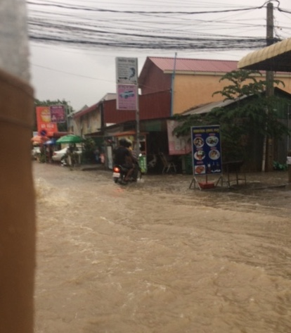
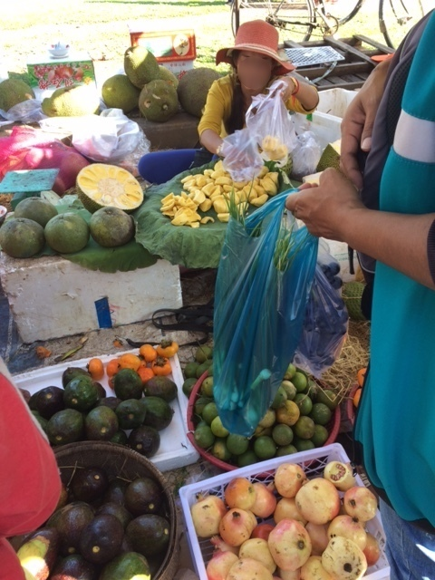
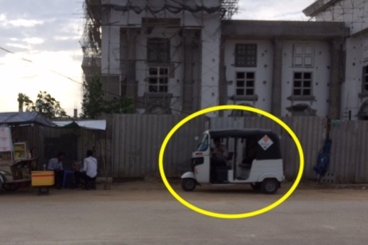
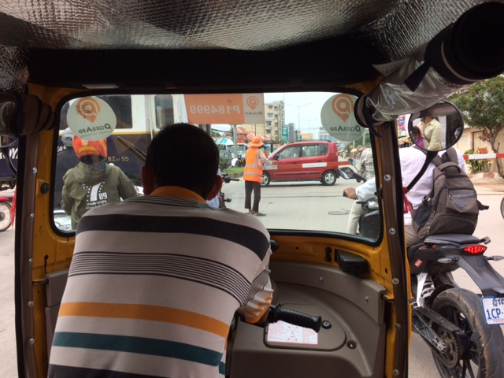

Landed
 Rainy Season To be honest, even just making it to the hotel with all of our baggage felt like a major victory. For those who have traveled internationally, nothing we could share about the trip would be too much out of the ordinary. But 30 hours from LAX to Phnom Penh with fully maxed out luggage (4 suitcases x 50 lbs + 4 carry-ons + stroller + car seat + … a baby), followed by a visa application process upon arrival, was definitely enough cause for us to be grateful to God that we even could arrive! We are also grateful that besides only minor health issues, we have been safely carried through our first week here. (Rebekah had a case of traveler’s tummy and Jonathan has some sort of sore throat, but it seems pretty mild).
 The marketplace But even beyond pure survival, and not losing any earthly possessions along the way (which is a privilege, not a right!), we have much to be grateful for:
- These last few weeks has been a time of experiencing the fellowship of the Church in very tangible ways. Not talking about just spending time with people or even having intentional, God-centered conversation, though that’s part of it. But it’s when one believer lives out the reality that we are united in Christ, in recognition of the fact that we have one God, one purpose, and one mission.
- We have also been working on learning Patience. God has finally granted us to leave, (waiting for which was an exercise in patience in itself), but now upon arriving, we must make sure not to try to rush into everything here! Part of this is having a long term perspective - what one teammate calls “playing long game”.
- Since arriving in Cambodia, we are grateful to report that the language learning we were able to do in the States has ended up helping out a lot. This, in conjunction with the fact that Cambodia is rapidly modernizing and most of all from the generosity in time and resources from our teammates, has greatly sped up the transition process quite a bit. Even still, despite the progress made so far, there is still quite a bit of “transitioning” that needs to take place before we feel at home here.
On that note, some requests for the upcoming months:
- That we would set good habits for this new season of life, and be intentional about this process.
- That God would continue to grant grace for transitioning as well.
- As classes start for the both of us on September 17th, with tutoring 1-2 hours a day, please pray for the wisdom and perseverance we know we will need.
- That God would provide a community for us as well and discernment to know what that looks like. It’s easy to gravitate towards English-speakers (especially for Rebekah), but pray that we would be able to find the balance between the extremes of cutting ourselves off completely and taking the more comfortable route of being in the ex-pat bubble.
 A PassApp vehicle - A few days ago, an elderly lady (a teacher at an international Christian school here) was riding in a PassApp vehicle (pictured to the right; many people, including us, use these) and someone driving next to her on a scooter reached in to grab her purse. However, it was strapped around her and she was pulled out of the PassApp vehicle, causing many injuries to her body and head. She was in the hospital and is back home, but please be in prayer for her and her family.
 PassApp vehicle from the inside Some of you have expressed interest in getting our mailing address as well. We have been advised against receiving anything of any significant value in the mail, since sometimes especially valuable packages won’t be successfully delivered, and we’ll have to pay customs tax even then.
Anyway, our address is:
Action Cambodia
PO Box 1178
Phnom Penh, Cambodia